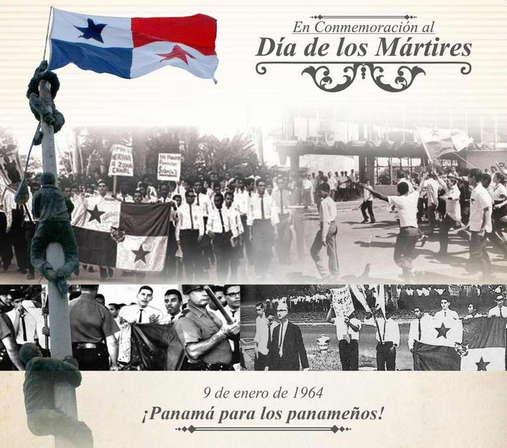

3 de noviembre de 1903
3 de noviembre de 1903

Es.
El 3 de noviembre es una fecha clave en la historia de Panamá
, ya que conmemora la separación de Panamá de Colombia en 1903
y el nacimiento de la República de Panamá.
Contexto de la fecha
El 3 de noviembre de 1903, Panamá proclamó su independencia
de Colombia, marcando el fin de una unión política que había
durado más de 80 años. Este evento fue el resultado de varios intentos
de independencia a lo largo del siglo XIX y se vio facilitado por el interés
de Estados Unidos en la construcción del Canal de Panamá
. La separación fue apoyada por líderes panameños como José Agustín Arango
y Manuel Amador Guerrero, quien se convertiría en
el primer presidente de Panamá
importancia de la fecha
LA separación de Panamá de Colombia no solo representó un cambio político,
sino que también fue un momento crucial para la identidad nacional panameña.
Este evento permitió a Panamá comenzar un camino hacia la autodeterminación
y el desarrollo, consolidándose como un punto estratégico entre los océanos Atlántico y Pacífico.
celebraciones.
Cada año, el 3 de noviembre se celebra con diversas actividades
y eventos patrióticos en todo el país. Las festividades incluyen desfiles,
ceremonias cívicas y actividades culturales que resaltan el orgullo nacional
y la historia de Panamá. Este día marca el inicio de las fiestas patrias
de noviembre, que culminan con la celebración de la independencia de otros países de la región.
En resumen, el 3 de noviembre es un día de gran significado para los panameños,
simbolizando su lucha por la independencia y el establecimiento de una nación soberana.
Separación de Colombia
Cada 3 de noviembre, Panamá conmemora uno
de los acontecimientos más importantes
de su historia: la separación de Colombia en 1903
fecha que dio origen a la República de Panamá.